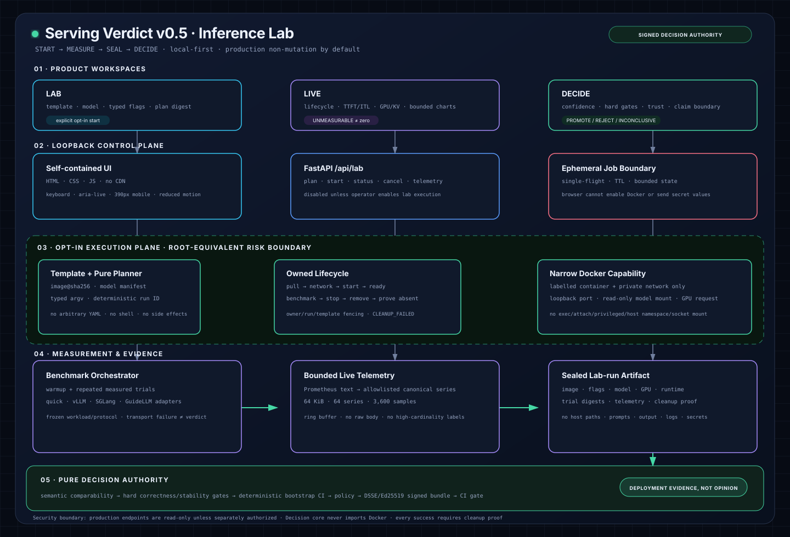

SERVING VERDICT · REFERENCE ARCHITECTURE
From runtime experiment
to signed promotion decision.
Inference Lab automates a disposable local serving experiment while preserving a small, pure decision authority. Docker, benchmark and telemetry produce evidence; they never decide.

Lab / Live / Decide
One understandable workflow: plan an exact runtime, watch bounded telemetry, then inspect the evidence-backed verdict.
Evidence, not dashboards
External benchmark and Prometheus formats are normalized into immutable, semantically explicit artifacts.
Fail closed by construction
No mutable images, arbitrary shell, silent cleanup failures, unsigned promotion under required trust, or fake certainty.